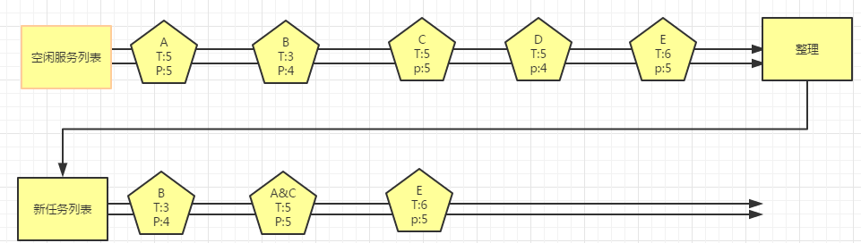
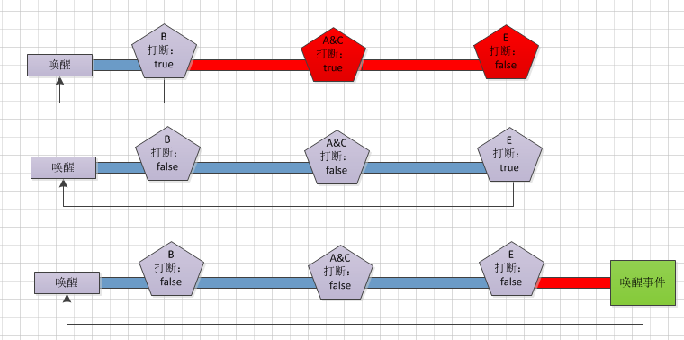

空闲服务
通常来说，长时间没有人与机器人交互，机器人就会进入空闲状态。如果希望机器人在“空闲”的时候执行某些指定的任务，比如迎宾、巡航或者播放广告等，空闲服务就可以帮你实现这个目的，管理这些任务之间的关系。
空闲状态：我们把机器人没有skill运行，并且前方1.3米内没有物体的情况定义为“空闲状态”。
空闲任务：机器人在空闲状态下启动的任务，如迎宾、巡航、播放广告等定义 为“空闲任务”。
管理规则
-
进入空闲时间短的优先执行
-
进入空闲时间相同优先级高的先执行
-
进入空闲时间及优先级相同的同时执行

如上图A,B,C,D,E分别表示机器人所有注册的空闲任务 ，T表示每个任务进入的时间，P表示优化级，这些任务经过空闲任务管理后会重新生成新的列表
空闲任务 打断空闲的规则
-
打断任务：当前空闲任务配置为打断任务，则会唤醒机器人，重新计时，不会进入下一个任务
-
非打断任务：如果空闲任务配置为非打断任务，则依次执行任务列表，直到唤醒事件打断空闲状态

如上图所示，打断任务开始执行后，空闲状态重新计算时间，并且后面的任务将无法执行，如上图红色部分
空闲任务 创建
-
配置空闲任务，在app目录下创建xml文件夹
-
在xml文件夹下创建robot_leisure.xml文件，文件内容如下，其中key、action、skillName不能为空，区分大小写，空闲服务会自动扫描所有已配置的应用，然后统一进行管理
xml <?xml version="1.0" encoding="utf-8"?> <manifest> <leisures> <task action="com/leisure/test1" key="task1" open="true" priority="5" skillName="test1" time="5" wakeup="false" > </task> </leisures> </manifest>
空闲服务API接口
类 LeisureManager
- java.lang.Object
- com.ubtechinc.cruzr.sys.cruzrleisure.leisure.LeisureManager
| 方法 | 描述 |
|---|---|
| enableLeisure(String key, boolean enable) | key:对应空闲任务的键值 enable: true表示打开，false表示关闭 打开或者关闭对应的空闲任务 |
| getLeisure(String key) | key:对应空闲任务的键值 获取对应key的空闲任务 |
| getLeisures() | 获取所有当前注册的空闲任务 |
| init(Context context) | 初始化空闲服务API，使用API前一定要初始化 |
| init(Context context, IinitListener listener) | context:上下文 listener:初始化状态回调 初始化空闲服务api，使用api前一定要初始化 |
| isConnected() | 判断当前服务是否连接中 |
| prohibitedLeisure() | 禁止机器人进入空闲，调用后机器人不再计算空闲时间，直到调用unProhibitedLeisure方法进行解锁 |
| unProhibitedLeisure() | 解除禁止机器人空闲，解禁后机器人重新计算空闲时间 |
| update(LeisureOptions option) | option:参数请看表2 更新空闲任务属性，详情参考上图说明 |
| wakeup() | 打断空闲计时，调用后会重新计算进入空闲的时长 |
类 LeisureOptions
- java.lang.Object
- com.ubtechinc.cruzr.sys.cruzrleisure.entity.LeisureOptions
| 类型 | 参数 | 参数描述 | 必填 |
|---|---|---|---|
| boolean | isOpen | true:当前空闲任务启用 false:当前空闲任务关闭 |
否 |
| boolean | isWakeup | true：表示当前空闲任务启动时会处于唤醒状态，机器人重新计算进入空闲时间，不会进入下一个空闲任务 false：当前任务不打断空闲，下一个空闲任务 可以继续执行 |
否 |
| String | key | 空闲任务的唯一标识，一个app可以创建多个空闲任务 | 是 |
| int | priority | 空闲任务的优先级，如果空闲时间相同，只启动优先级高的空闲任务，如果时间及优先级相同则同时启动 | 否 |
| long | time | 进入空闲任务的时长，单位s | 否 |
接口使用说明
使用接口时在应用的Appcation的onCreate方法进行初始化
LeisureManager.get().init(this, new IinitListener() { @Override public void onInit() { Log.i("leisure", "successfully initialize"); } }); }
空闲服务的核心接口为update(LeisureOptions options)，可以通过这个接口更新空闲任务的属性，如打开或关闭任务、更改进入任务时间、优先级等，比如将“task1”的空闲任务设置进入时间为20s，并且关闭此任务，使用方法如下：
LeisureOptions options1 = new LeisureOptions.Builder().key("task1").time(20).open(false).build(); LeisureManager.get().update(options1).done(new DoneCallback<Void>() { @Override public void onDone(Void aVoid) { Log.i("leisure", "update success"); } }).fail(new FailCallback<Exception>() { @Override public void onFail(Exception e) { Log.e("leisure", "update failed-> " + e.getMessage()); } });